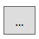
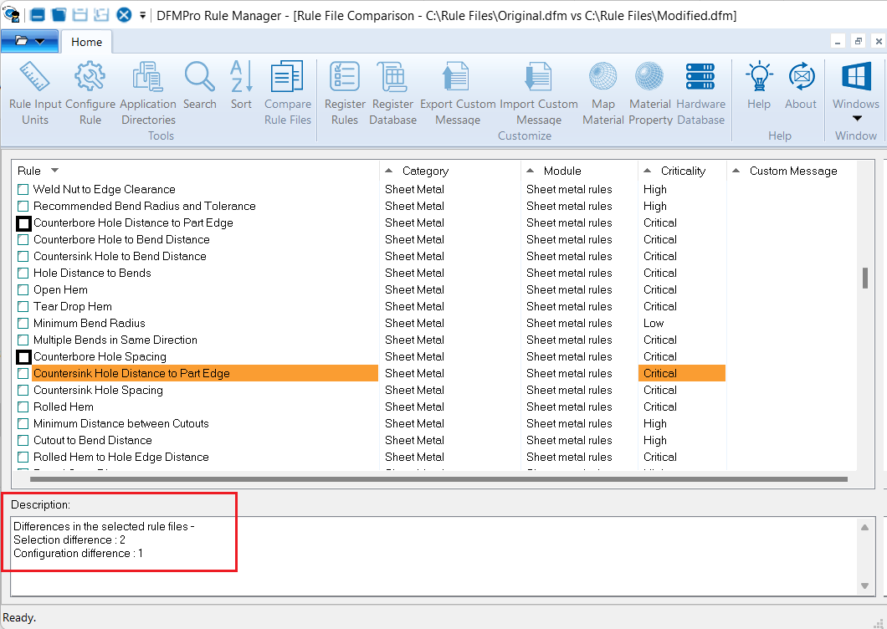

ルールマネージャーダイアログボックス内の Compare Rule Files ボタンをクリックすると、［ルールファイルの比較］ダイアログボックスが表示されます。このダイアログボックスでは、2つの異なるルールファイルを比較し、以下の差異を特定できます。
ファイル内で選択されているルールの違い
設定値の違い
ルールの重要度（クリティカリティ）の違い
コメントメッセージのテキストおよび説明の違い
表示されているルールマネージャーダイアログボックスで、ルールファイルを選択します。
Compare Rule Files ボタンをクリックして、Compare Rule Files ダイアログボックスを表示します。
Original Rule File および Modified Rule File の各オプションについて、ドロップダウンメニューから必要なファイルを選択できます。

Browse ボタンを使用して、必要なファイルを参照して選択することもできます。Compare Rule Files ボタンをクリックする前にルールファイルが開かれている場合、そのファイルは［ルールファイルの比較］ダイアログボックス内で Original ルールファイルとして読み込まれます。ユーザーはドロップダウンメニューから別のルールファイルを選択して比較できます。
注記:
最近開いた10個のルールファイルが、選択用としてドロップダウンメニューに表示されます。
両方のルールファイルを選択したら、OK ボタンをクリックします。
上部バーに、ルールマネージャーが比較対象となっているルールファイル名を表示します。
選択されたルールファイル間の差異を識別するため、ルールマネージャー上に以下の変更点が表示されます：
